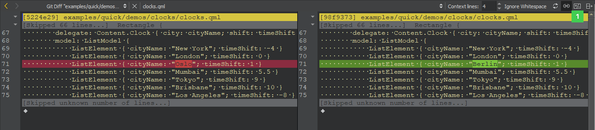

Using Git
Git is a fast decentralized version control system. Git is available for Windows, Linux, and macOS.
You can use the Gerrit code review tool for projects that use Git.
Using Git for Windows
If you configure Git for use with git bash, only, and use SSH authorization, Git looks for the SSH keys in the directory where the HOME environment points to. The variable is always set by git bash.
However, the variable is typically not set in a Windows command prompt. When you run Git from a Windows command prompt, it looks for the SSH keys in its installation directory, and therefore, the authorization fails.
You can set the HOME environment variable from Qt Creator. Select Tools > Options > Version Control > Git, and then select the Set "HOME" environment variable check box. HOME is set to %HOMEDRIVE%%HOMEPATH% when the Git executable is run and authorization works as it would with git bash.
Working with the Current File
To work with the current file, select the commands in Tools > Git > Current File. Some of the commands are also available for the project or local repository that contains the file.
Viewing Git Diff
You can diff the current file or project to compare it with the latest version stored in the repository and to display the differences. To display the diff in a read-only editor, select Diff of. If the file is accessible, you can double-click on a selected diff chunk and Qt Creator opens an editor displaying the file, scrolled to the line in question.

The diff is displayed side-by-side in a diff editor by default. To use the unified diff view instead, select the Switch to Unified Diff Editor (1) option from the toolbar. In both views, you can use context menu commands to apply, revert, stage, and unstage hunks, as well as send them to a code pasting service.
Viewing Git Log
To display the versioning history of a file, select Log of. The log output contains the date, the commit message, and a commit identifier. Click on the commit identifier to display a description of the change including the diff in the Git Show view.

Right-clicking on a commit identifier brings up a context menu that lets you apply actions on the commit, such as view annotations or cherry-pick or revert a commit.
Select  (Reload) to rescan the files.
(Reload) to rescan the files.
Viewing Annotations
To view annotations, select Blame. The view displays the lines of the file prepended by the commit identifier they originate from. Clicking on the commit identifier shows a detailed description of the change.
To show the annotation of a previous version, right-click on the commit identifier and select Blame Parent Revision. This allows you to navigate through the history of the file and obtain previous versions of it.
The other actions in the context-menu enable you to apply actions to the commit, such as cherry-pick, checkout, or revert it.
To rescan the files, click (Reload).
Staging Changes
To mark a new or modified file for committing it to the repository, select Stage File for Commit. To undo this function, select Unstage File from Commit.
Resetting Changes
Git has an index that is used to stage changes. The index is committed on the next commit. Git allows you to revert back to the state of the last commit as well as to the state staged in the index.
To revert all changes and reset the current file to the state of the index, select Undo Unstaged Changes.
To return the current file to the state it was in right after the last commit, select Undo Uncommitted Changes. This reverts all changes, discarding the index.
Working with the Current Project
To work with the current project, select the commands in Tools > Git > Current Project. The Diff Project and Log Project commands, which are also available for the current file, are described above.
Cleaning Projects
To clean the working directory, select Clean Project. All files that are not under version control are displayed in the Clean Repository dialog. Ignored files are deselected by default. Select the files to delete and click Delete.
Working with Local Repositories
To work with the local repository, select the commands in Tools > Git > Local Repository. The commands that are also available for the current file or project are described above.
Viewing Reference Log
Reference logs record when the tips of branches and other references were updated in the local repository. To view the reference log, select Reflog.
Viewing Git Status
To view the status of the repository in the Version Control output view, select Status.
Committing Changes to Git
To submit your changes to Git, select Commit. Qt Creator displays a commit page containing a text editor where you can enter your commit message and a checkable list of modified files to be included.
When you have finished filling out the commit page information, click on Commit to start committing.
The Diff Selected Files button brings up a diff view of the files selected in the file list. Since the commit page is just another editor, you can go back to it by closing the diff view. You can also switch to an open diff view by selecting it in the Open Documents pane in the sidebar.
Amending Commits
To apply latest changes to the last commit, select Amend Last Commit. You can also edit the commit message.
To amend an earlier comment in a series of related commits, select Fixup Previous Commit. This operation is done using interactive rebase. In case of conflicts, a merge tool is suggested.
Resetting Local Repository
To reset changes, select Reset. This opens a dialog where you can select the commit to reset the working directory to. This is useful after applying patches for review, for example. You can choose between a Soft reset that does not touch the index file nor the working tree at all, a Hard reset that discards all changes to tracked files in the working tree, and a Mixed reset that resets HEAD and the index (nothing remains staged) without touching the working directory.
To recover removed files, select Recover Deleted Files.
To change a series of commits in the local repository, select Interactive Rebase. You can reorder or discard commits, squash them into a single commit, or edit the commit messages.
Working with Branches
To work with Git branches, select Branches. The checked out branch is shown in bold and underlined in the list of branches in the Git Branches sidebar view.
If you checked out a specific commit, the list of branches displays a Detached HEAD entry.
For local and remote branches, the changes log can be shown by double clicking on the branch name.
To refresh the list of branches, click (Refresh).

The following operations are supported in the context-menu for a branch:
| Menu Item | Description |
|---|---|
| Add | Create new tracking and non-tracking branches. |
| Remove | Remove a local branch. You cannot delete remote branches. |
| Rename | Rename a local branch. You cannot rename remote branches. |
| Checkout | Check out the selected branch and make it current. You can stash changes you have made to tracked files. |
| Diff | Show the differences between the selected and the current branch. |
| Log | Show the changes in a branch. |
| Reset | Hard reset the active branch to the selected branch. |
| Merge | Join the development histories in two branches together. If the commit you are merging can be reached by following the first commit's history, there is no divergent work to merge together. To allow Git to move the branch pointer forward, select Merge (Fast-Forward). If you do not want to fast-forward the branch, select Merge (No Fast-Forward). |
| Rebase | Copy local commits to the updated upstream head. |
| Cherry Pick | Cherry pick the top commit from the selected branch. |
| Track | Set the current branch to track the selected one. |
| Push | Push the committed changes to the selected remote branch. |
The following additional context-menu operations are available for Remote Branches. The context-menu can be opened on Remote Branches or on a specific remote repository.
| Menu Item | Description |
|---|---|
| Fetch | Fetches all the branches and changes information from a specific remote repository, or from all remotes if applied to Remote Branches. |
| Manage Remotes | Opens the Remotes dialog. |
Configuring Merge Tools
Only graphical merge tools are supported. You can configure the merge tool to use on the command line. For example, to use the KDiff3 merge tool, enter the following command:
git config --global merge.tool kdiff3
Applying Patches
Patches are rewriting instructions that can be applied to a set of files. To apply a patch file that is open in Qt Creator, select Patch > Apply from Editor.
To select the patch file to apply from the file system, select Apply from File.
Using Stashes
With Git, you can put your current set of changes onto a virtual shelf called a stash. Stashes are useful, for example, to put aside a set of changes to work on higher priority tasks or to pull in new chages from another repository.
To stash all local changes, select Stash > Stash. The working copy is reset to the state it had after the last commit. To save the current state of your unstaged files and reset the repository to its staged state, select Stash Unstaged Files.
To display a dialog that shows all known stashes with options to restore, display or delete them, select Stashes.
To save a snapshot of your current work under a name for later reference, select Take Snapshot. The working copy is unchanged. For example, if you want to try something and find out later that it does not work, you can discard the changes and return to the state of the snapshot.
To remove a single stashed state from the stash list and apply it on top of the current working tree state, select Stash Pop.
Applying Actions to Commits
To browse a directory or the commit history and to apply actions on the commits, select Tools > Git > Actions on Commits. You can checkout, revert, or cherry-pick commits or view them in the diff editor.
Initializing Git Repositories
To start controlling a project directory that is currently not under version control, select Tools > Git > Create Repository. Qt Creator creates a new subdirectory named .git that contains all the necessary repository files. However, nothing in the project is tracked yet, so you will need to create an initial commit to start tracking the project files.
Working with Remote Repositories
To work with remote repositories, select the commands in Tools > Git > Remote Repository.
To fetch all the branches and change information from a remote repository, select Fetch.
To pull changes from the remote repository, select Pull. If there are locally modified files, you are prompted to stash the changes. Select Tools > Options > Version Control > Git and then select the Pull with rebase check box to perform a rebase operation while pulling.
To push committed changes to the remote repository, select Push.
Managing Remote Repositories
To manage remote repositories available in Git, select Tools > Git > Remote Repository > Manage Remotes. Double-click the names and URLs of the remote repositories to edit them.
The following operations are supported:
| Menu Item | Description |
|---|---|
| Refresh | Refresh the list of remote repositories. |
| Add | Add a new remote repository. |
| Fetch | Fetch all the branches and change information from a remote repository. |
| Push | Push committed changes to the remote repository. |
| Remove | Remove a remote repository. |
Using Git with Subversion
You can use Git as a client for a Subversion server. To fetch changes from a Subversion repository to a Git repository, select Tools > Git > Remote Repository > Subversion > Fetch.
To view the Git Subversion log, select Log.
To publish the commits from the current branch to the Subversion server, select DCommit. This will create a revision in Subversion for every local Git commit. Afterwards, the branch is rebased or reset (depending on whether or not there is a diff between Subversion and head).
Reviewing Code with Gerrit
If your Git project uses Gerrit for code reviews, you can view your changes in Qt Creator.
To push committed changes to Gerrit, select Tools > Git > Remote Repository > Push to Gerrit.

Select the Draft/private check box to push changes that are only visible to you and the reviewers. If you are using Gerrit 2.15 or later, you can select the Work-in-progress check box to push changes that do not generate email notifications.
To view the same information about each change as in the Gerrit web interface, select Tools > Git > Remote Repository > Gerrit.
To view details of the selected change, select Show.
To cherry-pick the selected change to the local repository, select Cherry Pick. To remove the change after testing it, select Tools > Git > Local Repository > Reset. In the Undo Changes to dialog, select the state to reset the working directory to, and then select OK.
To check out the change in a headless state, select Checkout.
To refresh the list of changes, select Refresh.
The Remote field lists the remotes of the current repository that are detected as Gerrit servers. Select Tools > Options > Version Control > Gerrit to specify a fallback connection to a Gerrit server over SSH. The Gerrit REST interface and the curl tool are used for HTTP connections.
Select the HTTPS check box to prepend https to the Gerrit URL if Gerrit does not provide it.

Working with Git Tools
To start a graphical interface to Git, select Tools > Git > Git Tools > Git Gui.
Note: On macOS, the default Git installation does not contain Git Gui. To use Git Gui, install it separately. To start Git Gui from Qt Creator, select Preferences > Version Control > Git, and set the path to the environment that contains Git Gui in the Prepend to PATH field.
To start the commit viewer for Git, select Tools > Git > Git Tools > Gitk. You can also start the tool to view commits in the current document or in the folder that contains the current document. To specify arguments for running Gitk, select Tools > Options > Version Control > Git.
To use some other application for viewing Git history, such as GitX or QGit viewer, select Tools > Options > Version Control > Git and specify the path to the application executable in the Command field. To start the application, select Tools > Git > Git Tools > Repository Browser.
To resolve merge conflicts, select Tools > Git > Git Tools > Merge Tool.